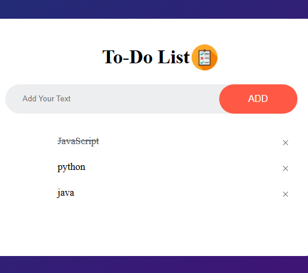

simple To-Do-List
using built HTML, CSS or JavaScript.

A simple and efficient to-do list app designed to help you organize tasks, set priorities, and stay productive. It allows users to add, edit, and delete tasks with a clean and intuitive interface. Built for ease of use, it ensures better task management and time efficiency. Stay organized and never miss a task again!